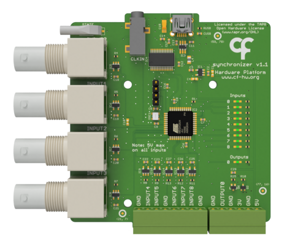

Namespace Harp.Synchronizer
Harp Synchronizer
Used to synchronize and align the different apparatus and devices present in a complex setup. It timestamps each rising or falling edge of the 9 digital input signals. The sampling of the inputs can also be configured to use a fixed sampling frequency.

Key Features
- Receives and timestamps up to 9 digital input signals
- Sampling on signal transitions or fixed sampling frequency up to 2kHz
Connectivity
- 1x clock sync input (CLKIN) [stereo jack]
- 1x USB (for computer) [USB type B]
- 9x digital inputs (DIN0 to DIN5) [BNC], (DIN6 to DIN8) [screw terminal]
- 1x digital output (DOUT0) [screw terminal]
Interface
The interface with the Harp board can be done through Bonsai or a dedicated GUI (Graphical User Interface).
In order to use this GUI, there are some software that needs to be installed:
1 - Install the drivers.
2 - Install the runtime.
3 - Reboot the computer.
4 - Install the GUI.
Licensing
Each subdirectory will contain a license or, possibly, a set of licenses if it involves both hardware and software.
| Synchronizer | |
|---|---|
| whoAmI | 1104 |
| firmwareVersion | 1.7 |
| hardwareTargets | 1.0 |
Registers
| name | address | type | length | access | description | range | interfaceType |
|---|---|---|---|---|---|---|---|
| DigitalInputState | 32 | U16 | Event | State of the digital input pins. An event will be emitted when the value of any digital input pin changes. | DigitalInputs | ||
| DigitalOutputState | 33 | U8 | Write | Status of the digital output pin 0. | DigitalOutputs | ||
| DigitalInputsSamplingMode | 34 | U8 | Write | Sets the sampling mode for digital input pins. | DigitalInputsSamplingConfig | ||
| DO0Config | 35 | U8 | Write | Configures how the DO0 pin behaves. | DO0ConfigMode | ||
| EnableEvents | 40 | U8 | Write | Specifies all the active events in the device. | SynchronizerEvents |
Classes
- AsyncDevice
Represents an asynchronous API to configure and interface with Synchronizer devices.
- CreateDO0ConfigPayload
Represents an operator that creates a message payload that configures how the DO0 pin behaves.
- CreateDigitalInputStatePayload
Represents an operator that creates a message payload that state of the digital input pins. An event will be emitted when the value of any digital input pin changes.
- CreateDigitalInputsSamplingModePayload
Represents an operator that creates a message payload that sets the sampling mode for digital input pins.
- CreateDigitalOutputStatePayload
Represents an operator that creates a message payload that status of the digital output pin 0.
- CreateEnableEventsPayload
Represents an operator that creates a message payload that specifies all the active events in the device.
- CreateMessage
Represents an operator which creates standard message payloads for the Synchronizer device.
- CreateTimestampedDO0ConfigPayload
Represents an operator that creates a timestamped message payload that configures how the DO0 pin behaves.
- CreateTimestampedDigitalInputStatePayload
Represents an operator that creates a timestamped message payload that state of the digital input pins. An event will be emitted when the value of any digital input pin changes.
- CreateTimestampedDigitalInputsSamplingModePayload
Represents an operator that creates a timestamped message payload that sets the sampling mode for digital input pins.
- CreateTimestampedDigitalOutputStatePayload
Represents an operator that creates a timestamped message payload that status of the digital output pin 0.
- CreateTimestampedEnableEventsPayload
Represents an operator that creates a timestamped message payload that specifies all the active events in the device.
- DO0Config
Represents a register that configures how the DO0 pin behaves.
- Device
Represents an observable source of messages from the Harp device connected at the specified serial port.
- DigitalInputState
Represents a register that state of the digital input pins. An event will be emitted when the value of any digital input pin changes.
- DigitalInputsSamplingMode
Represents a register that sets the sampling mode for digital input pins.
- DigitalOutputState
Represents a register that status of the digital output pin 0.
- EnableEvents
Represents a register that specifies all the active events in the device.
- FilterRegister
Represents an operator that filters register-specific messages reported by the Harp.Synchronizer device.
- Format
Represents an operator which formats a sequence of values as specific Synchronizer register messages.
- GroupByRegister
Represents an operator that groups the sequence of Harp.Synchronizer" messages by register type.
- Parse
Represents an operator which filters and selects specific messages reported by the Synchronizer device.
- TimestampedDO0Config
Provides methods for manipulating timestamped messages from the DO0Config register.
- TimestampedDigitalInputState
Provides methods for manipulating timestamped messages from the DigitalInputState register.
- TimestampedDigitalInputsSamplingMode
Provides methods for manipulating timestamped messages from the DigitalInputsSamplingMode register.
- TimestampedDigitalOutputState
Provides methods for manipulating timestamped messages from the DigitalOutputState register.
- TimestampedEnableEvents
Provides methods for manipulating timestamped messages from the EnableEvents register.
Enums
- DO0ConfigMode
Available configuration for the DO0.
- DigitalInputs
Specifies the state of digital input port lines.
- DigitalInputsSamplingConfig
Available modes for catching/sampling the digital inputs.
- DigitalOutputs
Specifies the state of digital output port lines.
- SynchronizerEvents
The events that can be enabled/disabled.